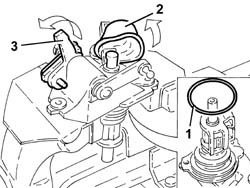
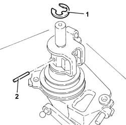
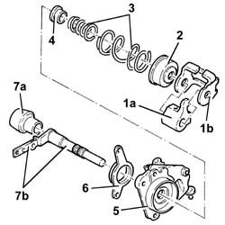
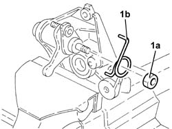
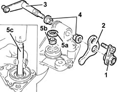
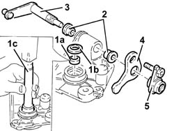
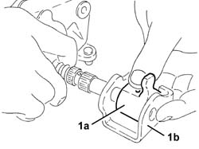

2110C54 GEAR SELECTION AND ENGAGEMENT UNIT - R R
- Path
- Procedures > 21 GEARBOX UNIT > 2110 MANUAL GEARBOX WITH DIFFERENTIAL > 2110C GEAR CASES AND COVERS OF MANUAL GEARBOX WITH DIFFERENTIAL > 2110C54 GEAR SELECTION AND ENGAGEMENT UNIT - R R
- Kind
- repair procedure (removal / refitting; the operation number is the code)
- Applies to
- engines: 2.0 JTS; all production periods
- Interactive page
- https://sloeber94.github.io/elrnDB-aGt/en/#/125001251
Applies to: engines: 2.0 JTS; all production periods
 Removing
Removing
 Refitting
Refitting1. Remove the O-ring.
Position the gear selector and engagement assembly in the vice fitted with protective jaws.
2. Lift up the rubber protection.
3. Lift up the selector to release it from the control shaft.
Remove the gear selector and engagement assembly from the vice.

Applies to: engines: 2.0 JTS; all production periods
1. Remove the retaining ring.
2. Remove the pin.

Applies to: engines: 2.0 JTS; all production periods
1. Remove the selector (1a) and the bracket (1b).
2. Remove the cover.
3. Remove the springs.
4. Remove the bush.
5. Remove the mount.
6. Remove the flange.
7. Separate the rubber protection (7a) from the control shaft (7b).

Applies to: engines: 2.0 JTS; all production periods
Position the support in the vice fitted with protective jaws.
1. Undo the nut (1a) and remove the spring (1b).
Remove the support from the vice.

Applies to: engines: 2.0 JTS; all production periods
1. Remove the bush.
2. Remove the selector.
3. Remove the lever.
4. Remove the two bushes.
5. Remove the seal (5a) and the bush (5b) using a suitable tool (5c).

Applies to: engines: 2.0 JTS; all production periods
Refitting
Removing1. Fit the bush (1a) and the seal (1b) using a suitable tool (1c).
2. Fit the two bushes.
3. Fit the lever.
4. Fit the selector.
5. Fit the bush.

Applies to: engines: 2.0 JTS; all production periods
Position the support in the vice fitted with protective jaws.
Fit the spring and tighten the nut.
Remove the support from the vice.
Fit the rubber protection on the control shaft.
Fit the flange.
Fit the support.
Fit the bush.
Fit the springs.
Fit the cover.
1. Fit the selector (1a) and the support (1b) as shown in the diagram.

Applies to: engines: 2.0 JTS; all production periods
Fit the pin.
Fit the retaining ring.
Fit the gear selector and engagement assembly in the vice fitted with protective jaws.
Connect the selector to the control shaft.
Fit the rubber protection.
Remove the gear selector and engagement assembly from the vice.
Fit a new O-Ring seal.